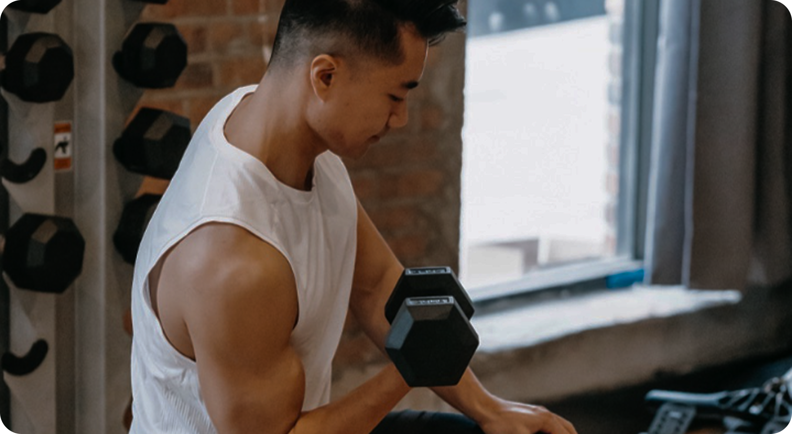
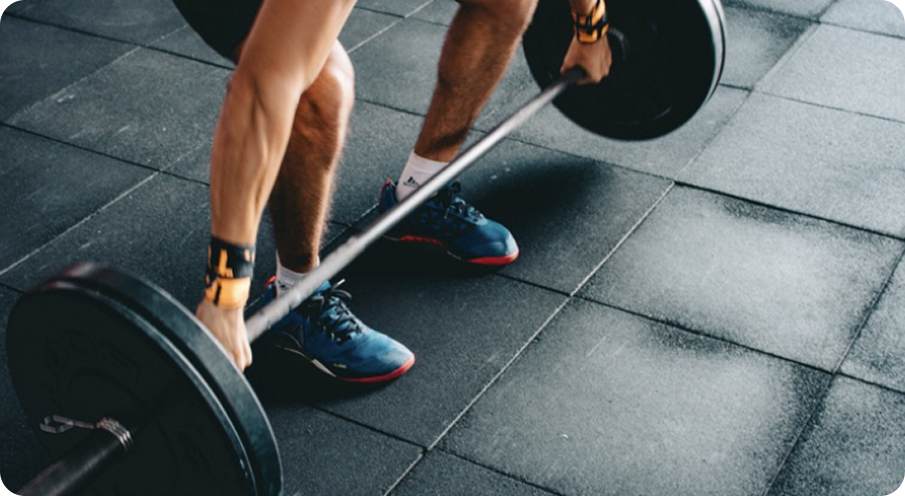

Treino de 2 dias divididos - O guia completo (2025)
O Que é a divisão de dois dias?
Treinar apenas duas vezes por semana pode parecer pouco, mas se for bem planejado, ainda é possível ter bons resultados, principalmente para iniciantes. A ideia é organizar esses dois dias de forma que você trabalhe os principais músculos do corpo de maneira eficiente e com esforço suficiente. Uma das formas mais simples e eficazes é usar a divisão chamada “corpo inteiro”. Nessa divisão, você treina todos os grupos musculares principais (pernas, costas, peito, ombros, braços e abdômen) nos dois dias. Isso garante uma boa frequência por músculo e ajuda a manter o corpo em movimento completo, mesmo com poucos treinos na semana.
Outra opção é fazer um treino para membros inferiores em um dia e outro para membros superiores no outro. Isso permite mais foco e intensidade em cada parte do corpo, mas a frequência por grupo muscular será menor, o que pode atrasar um pouco os resultados para quem tem mais experiência. Mesmo assim, para quem está começando, funciona muito bem.
Existe ainda a possibilidade de alternar entre treinos de empurrar, puxar e pernas, escolhendo dois desses por semana e trocando a ordem na semana seguinte. Por exemplo, uma semana você faz empurrar e puxar, na outra faz pernas e empurrar. Esse modelo é mais avançado e exige mais organização, já que cada grupo demora mais para ser trabalhado novamente.
Quais são os benefícios de uma divisão de 2 dias?
Uma divisão de treino de 2 dias por semana pode trazer muitos benefícios, especialmente para quem está começando. Para os iniciantes, é uma forma leve de entrar no ritmo sem se sentir sobrecarregado. Como são apenas dois treinos, fica mais fácil manter a constância, pegar gosto pela atividade física e progredir com segurança. Além disso, esse tipo de rotina ajuda o corpo a se adaptar aos estímulos sem exigir demais da recuperação, o que é essencial no início.
Esse modelo também é útil para atletas que treinam esportes específicos, como futebol, basquete ou vôlei. Mesmo treinando essas modalidades em alto nível, é possível incluir dois treinos de corpo inteiro por semana para melhorar força e resistência muscular. Como são sessões bem distribuídas, não há sobrecarga em um único grupo, evitando a fadiga excessiva, estagnação, ou até mesmo risco físico geral do atleta.
Pessoas com pouco tempo também se beneficiam bastante. Nem todo mundo consegue ir à academia 5x por semana, então ter um plano reduzido, mas eficiente, é uma excelente alternativa. Nessas duas sessões, os dois treinos bem-programados garantem que a pessoa se mantenha ativa, estimule o progresso e preserve a saúde e o condicionamento físico até que consiga aumentar a frequência caso seja conveniente. Mesmo sem tanta frequência, o importante é manter o foco nos treinos e evitar longos períodos de sedentarismo.
Além disso, treinar duas vezes por semana ajuda a manter o hábito sem exigir grandes mudanças na rotina. É uma forma realista e sustentável de incluir a atividade física na vida, especialmente para quem está recomeçando ou tem outras prioridades no dia a dia. O importante é a consistência e a qualidade dos treinos, não apenas a quantidade.
Qual é a melhor rotina de treino dividida em 2 dias?
Muitas pessoas que só podem treinar duas vezes por semana acabam em dúvida sobre qual tipo de divisão seguir: corpo inteiro, membros superiores/inferiores ou até uma variação como empurrar/puxar. A opção mais recomendada para a maioria é o treino de corpo inteiro, já que ele permite trabalhar todos os principais músculos nas duas sessões semanais. Isso traz resultados mais rápidos em força e massa muscular, além de manter o treino dinâmico e envolvente, já que você sente o corpo todo sendo trabalhado.
A alternativa de dividir entre membros superiores e inferiores também funciona bem, especialmente para quem gosta de focar com mais intensidade em determinados grupos musculares. Nessa abordagem, um treino é voltado para braços, peito, ombros e costas, enquanto o outro é dedicado a pernas e glúteos.
A principal diferença é que com treino de corpo inteiro apenas uma vez por semana, o estímulo pode ser mais limitado (dependendo do seu objetivo). Já na divisão superior/inferior, você dá mais atenção específica para cada músculo, como em exercícios isolados de fortalecimento físico com as pernas fora da rotina diária, como em empurrar/puxar ou no clássico empurrar/puxar perna.